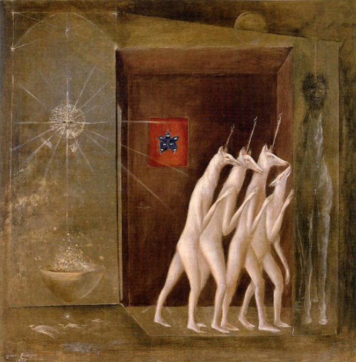

Leonora Carrington
Leonora Carrington OBE (6. april 1917 – 25. maj 2011) je bila meksička nadrealistička slikarica i književnica rodom iz Britanije. Najveći dio života je provela u Ciudad Mexicu. Odrasla je u porodici tekstilnog magnata, a na njen opus je značajno uticao Max Ernst, s kojim je imala ljubavnu vezu i živjela u Parizu. Tokom drugog svjetskog rata se sklonila u neutralnu Španiju, ali je tamo neko vrijeme bila zatvorena u psihijatrijskoj bolnici. Odatle je uspjela pobjeći i pronašla utočište u Meksiku gdje je provela ostatak života. Poznata je kao jedna od posljednih "originalnih" nadrealista. Živjela je većinu svog odraslog života u Mexico Cityju i bila je jedan od posljednjih preživjelih sudionika u nadrealističkom pokretu 1930-ih. Carrington je također bila utemeljiteljica Ženskog pokreta za oslobađanje u Meksiku tijekom 1970-ih.
Rani život

Carrington je rođena u Clayton Green, Chorley, Lancashire, Engleskoj. Njezin je otac bio bogati proizvođač tekstila, a njezina majka, Maureen (rođena Moorhead), bila je Irkinja. Imala je tri brata: Patricka, Geralda i Arthura.
Obrazovali su ju guvernanti, tutorice i redovnice, odveli su je iz dviju škola, uključujući New Hall School , Chelmsford , zbog njezinog buntovnog ponašanja sve dok ju obitelj nije poslala u Firenzu gdje je pohađala Akademiju likovne umjetnosti gđe Penrose. Ona je, ukratko, pohađala školu samostana Sv. Marije u Ascotu. Godine 1927., u dobi od deset godina, vidjela je svoju prvu nadrealističku sliku u galeriji Left Bank u Parizu, a kasnije se susrela s mnogo nadrealista, uključujući Paula Éluarda . Njezin otac se suprotstavio njezinoj karijeri kao umjetnik, ali ju je njezina majka ohrabrila. Vratila se u Englesku i predstavljena na sudu, ali prema njezinim riječima, ona je donijela kopiju Aldous Huxley's Eyeless u Gazi (1936) kako bi pročitala. Godine 1935. prisustvovala je školi umjetnosti Chelsea u Londonu godinu dana, a uz pomoć prijatelja njezina oca Sergea Chermayeffa uspjela je prenijeti na Ozenfant Academy u Londonu (1935.-38.).
Udruga
Godine 1936. Leonora je vidjela djelo njemačkog nadrealista Maxa Ernsta na Međunarodnoj nadrealističkoj izložbi u Londonu, a nadrealistička umjetnost ju je privukla prije no što ga je upoznala. Godine 1937., Carrington se sastala s Ernstom na zabavi u Londonu. Umjetnici su se povezali i vratili u Pariz, gdje se Ernst odmah odvojio od svoje supruge. Godine 1938. napuštajući Pariz, naselili su se u Saint Martin d'Ardècheu u južnoj Francuskoj. Novi par je surađivao i podržavao umjetnički razvoj. Dva su umjetnika stvorila skulpture skrbnika (Ernst je stvorio svoje ptice i Carrington je stvorila konjskog konja) kako bi ukrašavali svoj dom u Saint Martin d'Ardèche. Godine 1939. Carrington je naslikala portret Maxa Ernsta, kao počast njihovoj vezi. Portret je bio njezin prvi nadrealistički rad, a nazvan je Inn of the Dawn Horse. Sada je u Metropolitanskom muzeju umjetnosti. Osoba na slici je križ između muškarca i žene, koji je sjedio u sobi s konjskim zglobom na zidu.

Carrington je imala zanimanje za životinje, mit i simbolizam. Ovaj je interes postao jači kada se preselila u Meksiko i započela vezu s emigracijskim španjolskim umjetnikom Remedios Varo. Oboje su proučavali alkemiju , kabalu i postklasicističke mistične spise Maya, Popol Vuh.S izbijanjem Drugog svjetskog rata Ernsta, koji je bio Nijemac, francuske su vlasti uhitile zbog "neprijateljskog stranca". Uz zagovor Paul Éluarda i drugih prijatelja, uključujući američkog novinara Varian Fryja , otpustio ga je nekoliko tjedana kasnije. Ubrzo nakon što su nacisti napali Francusku, Ernst je ponovno uhićen, ovaj put od strane Gestapa, jer su ga nacisti smatrali " degeneriranima ". Uspio je pobjeći i, ostavivši Carringtonicu, pobjegao je u Ameriku uz pomoć Peggy Guggenheim , koji je bio sponzor umjetnosti.
Nakon Ernstovog uhićenja, Carrington je bio devastiran i pobjegao u Španjolsku. Paralizirajuća anksioznost i rastuće deluzije kulminirale su konačnim kvarom u britanskom veleposlanstvu u Madridu. Njezini su roditelji intervenirali i njezin je bio hospitaliziran. Dobila je " konvulzivnu terapiju " i tretirana lijekom kardiazol , snažnim anksiolitikom (eventualno zabranjenim od strane nekih organa vlasti, uključujući US Food and Drug Administration (FDA)) i Luminal , barbituratom . Nakon što je pušten u medicinsku sestru koja ju je odvela u Lisabon ,Carrington je pobjegao i potražio utočište u meksičkom veleposlanstvu. U međuvremenu se Ernst oženio Peggyom Guggenheimom u New Yorku 1941. godine. Taj je brak završio nekoliko godina kasnije. Ernst i Carrington nikada nisu nastavili svoj odnos.
Tri godine nakon puštanja iz azila i poticanja Andréa Bretona , Carrington je pisao o svom psihotičnom iskustvu u svom romanu Down Below. U ovom je objasnila kako je imala živčani slom, nije htio jesti, a napustio je Španjolsku. Ovdje je bila zatočena u azil. Ilustrira sve što joj je učinjeno; nemilosrdne institucionalne terapije, seksualni napad, halucinacije i nehigijenske uvjete. Predloženo je da se zbivanja knjige ne smiju uzimati doslovno, s obzirom na Carringtonovu državu u vrijeme njezine institucionalizacije; međutim, nedavni autori pokušali su ispitati detalje njezine institucije kako bi diskreditirali ovu teoriju. Također je stvorila umjetnost kako bi prikazala svoje iskustvo, poput njezina portreta dr. Moralesa i karte dolje ispod .
Meksiko

Nakon bijega u Lisabonu, Carrington je organizirao prolaz iz Europe s Renato Leducom , meksičkim veleposlanikom. Leduc je bio prijatelj Pabla Picassa i složio se s Carringtonovim brakom, tako da joj se odobri imunitet koji mu je dano diplomatskoj ženi. Leduc je militirala Carringtona u Meksiko, koju je odrasla u ljubavi i gdje je živjela, uključivala i isključivala, za ostatak svog života. Par se rastao 1943. godine. Događaji iz tog razdoblja nastavili su informirati svoj rad.
Nakon što je proveo dio 1960-ih godina u New Yorku , Carrington je ponovno živio i radio u Meksiku. Dok je u Meksiku, od 1963., bila je zamoljena da stvori zidnu sliku koju je nazvala El Mundo Magico de los Mayas, a na koju su utjecale folklorne priče iz regije. Muratura se sada nalazi u Museo Nacional de Antropología u Mexico Cityu .
Carrington je dizajnirao Mujeres conciencia (1973), plakat, za pokret za žene oslobađanje u Meksiku, koji prikazuje 'novu noć'. Carrington, osobno i prvenstveno usredotočen na psihičku slobodu, shvatio je da se takva sloboda ne može postići dok se ne ostvari politička sloboda. Kroz ove uvjerenja, Carrington je shvatio da je "veća suradnja i razmjena znanja između politički aktivnih žena u Meksiku i Sjevernoj Americi" važna za emancipaciju. Carringtonova politička obveza dovela je do njenog osvajanja nagrade za životno djelo na Konvenciji za ženska udruga za umjetnost u New Yorku 1986. godine.
Drugi brak i djeca
Kasnije se udala za Emerikom Weisz (nadimak "Chiki"), rođen u Mađarskoj 1911., fotograf i menadžer tamne sobe Robert Capa tijekom španjolskog građanskog rata . Imali su dva sina: Gabriela, intelektualca i pjesnika, i Pabla, liječnika i nadrealističkog umjetnika. Chiki Weisz je umro 17. siječnja 2007. kod kuće. Imao je 97 godina.
Smrt
Leonora Carrington umrla je 25. svibnja 2011., u dobi od 94 godine, u bolnici u Mexico Cityu, kao posljedica komplikacija uzrokovanih upalom pluća .
Djela
Carrington je izjavio: "Slikao sam se za sebe ... nikad nisam vjerovao da će netko izložiti ili kupiti svoj posao". Nije bila zainteresirana za spise Sigmunda Freuda , kao i ostali surrealisti u pokretu. Umjesto toga, usredotočila se na čaroban realizam i alkemiju i koristio autobiografske detalje i simboliku kao subjekte njezinih slika. Carrington je bio zainteresiran za predstavljanje ženske seksualnosti kakvu je doživljava, a ne kao na karakterizaciju ženske seksualnosti muških nadrealista. Carringtonski rad četrdesetih godina 20. stoljeća usredotočen je na temeljnu temu uloge žena u kreativnom procesu.
U autoportretu (1938), Carrington nudi vlastito tumačenje ženske seksualnosti gledanjem prema vlastitoj seksualnoj stvarnosti, a ne teoriziranju na temu, kao što su ga običavali drugi surrealisti u pokretu. Carringtonovo odmak od karakterizacije ženske seksualnosti pretvorilo je tradicionalnu mušku ulogu nadrealističkog pokreta. Autoportret (1938.) također nudi uvid u Carringtonovo zanimanje za 'alkemijsku transformaciju materije i njezin odgovor na nadrealistički kult želje kao izvor kreativne inspiracije'. Hijena prikazana u autoportretu (1938) spaja mušku i žensku u cjelinu, metaforiku svjetova noći i sanja. Simbol hijene prisutan je u mnogim Carringtonovim kasnijim djelima, a čak se koristi i za prikazivanje Carringtona u djelu Max Ernsta "La Debutante" u svojoj knjizi The Oval Lady.

Njezina knjiga Truba s sluhom se bavi starenjem i ženskim tijelom. Slijedi priča o starijim ženama koje, u riječima Madeleine Cottenet-Hage u svom eseju "Tijelo Subverzivno: Tjelesna slika u Carringtonu, Prassinosu i Mansouru", nastoje uništiti institucije svog maštovitog društva kako bi uveli "duh sestrinstva." Truba s sluha također kritizira posramljenje ženskog tijela ženskog spola, a za koju se vjeruje da je jedna od prvih knjiga koja se bavi pitanjem rodnog identiteta u 21. stoljeću. Carringtonski pogledi na seksualnost, međutim, razlikuju se od suvremenih feministkinja u tome što vidi maternicu kao ključno iskustvo ženstvenosti. Carrington je izjavio: "Mi, žene, životinje su uvjetovane majčinstvom .... Za ženske životinje stvaranje ljubavi, koju slijedi velika drama rođenja nove životinje, gura nas u dubine biološke špilje."
Prva važna izložba njezinog djela pojavila se 1947. godine u galeriji Pierre Matisse u New Yorku. Carrington je pozvan da pokaže svoj rad na međunarodnoj izložbi nadrealizma, gdje je bila jedina stručna slikarica engleskog engleskog jezika. Gotovo preko noći postala je slavna osoba. U Meksiku je autorica i uspješno objavila nekoliko knjiga.
Prva velika izložba njezinog rada u Velikoj Britaniji dvadeset godina održana je u Chichesterovoj galeriji Pallant House u West Sussexu, od 17. lipnja do 12. rujna 2010., u sklopu sezone velikih međunarodnih izložbi pod nazivom Surreal Friends, koja je slavila ulogu žena u nadrealistički pokret. Njezin je rad izložen uz djela njezinih bliskih prijatelja, španjolskog slikara Remedios Varo (1908-1963) i mađarskog fotografa Kati Horna (1912-2000).
U 2013. godini, Carrington je bio predmetom velike retrospektive u irskom Muzeju moderne umjetnosti u Dublinu. Keltski nadrealist , kustosio ga je Sean Kissane i pregledao Carringtonovu irsku pozadinu da osvijetli mnoge kulturne, političke i mitološke teme prisutne u svom radu.

Carringtonova umjetnost često prikazuje konje, kao u njezinom autoportretu (Inn of the Dawn Horse) i slikama The Cones of Lord Candlestick. Njezina fascinacija s konjima za crtanje započela je u djetinjstvu. U svojim spisima pojavljuju se i konji. U svojoj prvoj kratkoj priči, "Kuća straha", Carrington prikazuje konja u ulozi psihičkog vodiča mladoj heroini. Godine 1935. prvi je esej, Carrington, "Jezzamathatics ili Uvod u prekrasan proces slikanja", objavljen prije svoje priče "Sedmi konj". Carrington je često koristio kodne riječi kako bi diktirao tumačenje u njezinu djelu. "Candlestick" je kôd koji je obično zastupao njezinu obitelj i riječ "gospodar" za svog oca.
Godine 2005. Christiejev aukcijski Carringtonov Juggler (El Juglar ) i ostvarena cijena iznosili su 713.000 USD, postavljajući novi rekord za najvišu cijenu koja se plaća na dražbi za živu nadrealističku slikaru. Carrington slikani portreti telenovele glumca Enrique Álvarez Félix, sin glumice María Félix , prijatelja Carringtonovog prvog muža.
Godine 2015. Carrington je počašćen Google Doodleom koji je obilježavao svoj 98. rođendan. Doodle se temeljio na njezinoj slikarstvu, Kako je mali krokodil , privučen u nadrealistički stil. Slika je bila inspirirana pjesmom u Aliceovim avanturama u zemlji čudesa Lewis Carroll , a ta je slika s vremenom pretvorena u Cocodrilo na Paseo de la Reforma.
Izložbe |
|||
| 2017: nadrealističke žene, gradonačelnika, Barceloni, Španjolska, Barcelona | 2016: umjetnici i ljubavnici, galerija Ordovas, London, UK, Mayfair | 2015: Lorna Otero Album projekta obitelji, Miami, Muzej umjetnosti Patricia & Phillip Frost, Međunarodno sveučilište Florida, SAD, Downtown Miami | 2011: Eksluzija: seks, smrt i ludilo u osam nadrealističkih majstora, Galerija Wendi Norris, SAD, Union Square |
| 2016: Monstruosismos, Muzej moderne umjetnosti Ciudad de Mexico, Meksiko, Bosque de Chapultepec | 2016: Čudni svjetovi: Vizija Angele Carter, Kraljevska West of England Academy, Velika Britanija, Bristol | 2015: nadrealizam: konjurirani život, Muzej suvremene umjetnosti (MCA) Chicago, SAD, blizu sjeverne strane | 2011: Boja mojih snova Nadrealistička revolucija u umjetnosti, Vancouver umjetnička galerija, Kanada, Vancouver |
| 2016:Nadrealni susreti. Prikupljanje čudesne, škotske nacionalne galerije moderne umjetnosti, Velika Britanija, Edinburgh | 2016: Leonora Carrington: Muzej znatiželja, likovne umjetnosti i prirodne povijesti Utorak Utorak Utorak i Viktor Wynd. Hackney, London, rujan - prosinac 2016. | 2015: polja snova: nadrealistički pejzaž, Di Donna, SAD, Upper East Side | 2011: Dobro, loše, ružno?, Muzej latinoameričke umjetnosti, SAD, Long Beach |
| 2016: Nadrealni susreti. Prikupljanje čudesne, škotske nacionalne galerije moderne umjetnosti, Velika Britanija, Edinburgh | 2015: Leonora Carrington: Tate Liverpool, 6. ožujka - 31. svibnja 2015. | 2014:nadrealizam i magija, muzej umjetnosti Herbert F. Johnson, Sveučilište Cornell, USA, Ithaca | 2011: noćna mirisna zaliha, Galerija Marianne Boesky, 118 East 64th Street, SAD, Upper East Side |
| 2016: Dalí, Ernst, Miró, Magritte ...: Nadrealni susreti iz zbirki Edward James, Roland Penrose | 2015:adrealizam i magija, Muzej umjetnosti Boca Raton, SAD, Boca Raton | 2014: Papir, Olovka i tinta: Ispisi i ostali radovi na papiru, Ruiz-Healy Art, SAD, San Antonio | 2011:Leonora Carrington i Tilly Losch , Viktor Wynd Fine Art Inc. |
| 2016:Gabrielle Keiller, Ulla i Heiner Pietzsch, Hamburger Kunsthalle, Njemačka, Hamburg | 2015: Kahlo, Rivera i meksička suvremena umjetnost, NSU Muzej umjetnosti, Fort Lauderdale, SAD, Ft. Lauderdale | 2013: Max Ernst, Fondacija Beyeler, Basel, Švicarska, Basel | 2010: Surreal Friends, Galerija Pallant House, Velika Britanija, Chichester |
| 2016: Dalí, Ernst, Miró, Magritte ...: Nadrealni susreti iz zbirki Edward James, Roland Penrose | 2015: Meksiko: fantastičan identitet. Izmišljotine 20. stoljeća iz zbirke FEMSA, Muzej latinoameričke umjetnosti, SAD, Long Beach | 2013-2014: Leonora Carrington: Keltski nadrealistički, irski muzej moderne umjetnosti, Dublin, Irska (solo) | 2010: Božanska komedija, Sotheby's New York, SAD, Upper East Side |
| 2016:Gabrielle Keiller, Ulla i Heiner Pietzsch, Hamburger Kunsthalle, Njemačka, Hamburg | 2012: U zemlji čudesa: nadrealističke avanture žena umjetnika u Meksiku i Sjedinjenim Američkim Državama, Los Angeles | 2012: Županijski muzej umjetnosti, SAD, Park La Brea | 2009: Latitudes: Latinoamerički majstori iz zbirke Femsa, Bowers Muzej kulturne umjetnosti, SAD, Santa Ana |
| 2009:Anđeli anarhije: žene umjetnici i nadrealizam, Umjetnička galerija Manchester, Velika Britanija, Manchester ) | 2008:Arte Americas Latinoamerički sajam umjetnina, Tresart, SAD, Coral Gables | 2008:djela Natasha i Jacques Gelman Zbirka moderne meksičke umjetnosti, Irski muzej moderne umjetnosti, Irska, Dublin | 2008: Talismanic Lens, Galerija Frey Norris, San Francisco, CA (solo) |
| 2017: nadrealizam: snovi na platnu, Nassau County Museum of Art, Roslyn Harbor, NY | 2003: Frida Kahlo, Diego Rivera i meksička umjetnost 20. stoljeća: Zbirka Jacques i Natasha Gelman, Nacionalni muzej meksičke umjetnosti, Chicago, IL | 2001-2002: nadrealizam: Desire Unbound, The Tate, London, Engleska i Metropolitanski muzej umjetnosti, New York, NY | 1999: Mirror Images: Žene, nadrealizam i samo-zastupanje, San Francisco Muzej moderne umjetnosti, San Francisco, CA |
Više o njezinim djelima